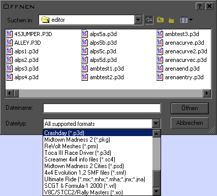

Location: [crashday]\tools\zmodeler

ZModeler
.p3d filter
When
you are using ZModeler, there is (almost) no need for MakeP3D. The
SDK provides you with an own .p3d filter for Zmodeler1.x. Thus, you are
able to easily export and even import content from or to ZModeler.
Installing the filter
Just
copy the file “p3d.zmf” into your ZModeler filters
directory. (e.g. C:\Program Files\ZModeler\filters)
When
you are using the filter for the first time, it will ask for the
Crashday installation directory. After correctly setting it (e.g.
C:\Games\Crashday), the conversion should work fine.
 As
ZModeler is not capable of handling light objects, no lights will be
imported or exported. In fact, if you like to create cars for
Crashday, they will either have no light flares or you have to export
your model into another modelling application to add light objects.
As
ZModeler is not capable of handling light objects, no lights will be
imported or exported. In fact, if you like to create cars for
Crashday, they will either have no light flares or you have to export
your model into another modelling application to add light objects.
ZModeler does not support .dds textures. If you like to use
Crashday's default textures, you have to convert them into .tga-files
(or some other format) first to see them in the viewport.